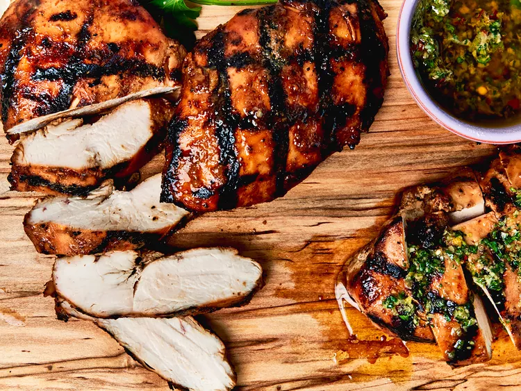

Grilled Chicken Breast Recipe

Description
The best grilled chicken breasts you'll ever make begin with a basic
marinade and end with the best technique for perfect cooking, complete
with beautifully-executed grill marks.
Few dishes are as crowd-pleasing as classic grilled chicken breasts. Every
home cook needs a perfect recipe—that’s where we come in. Learn how to
grill chicken breasts at home with this tried-and-true, test
kitchen-approved recipe.
Grilled Chicken Breast Marinade Ingredients
-
Olive oil: Our perfect marinade starts with olive oil,
which is essential for locking in moisture.
-
Dijon: Dijon mustard adds complex, sharp, pleasantly
tangy flavor.
- Honey: Honey lends subtle sweetness.
- Soy sauce: Soy sauce adds umami-rich saltiness.
-
Lemon juice: Lemon juice brightens things up a bit.
-
Garlic: Of course, fresh garlic is necessary for the
most flavorful marinade.
-
Ground spices: Onion powder and ground ginger take the
flavor up a notch.
How to Cook Chicken Breasts On the Grill
Here's a very brief overview of what you can expect when you grill chicken at home:
- Trim the chicken and pound to an even thickness.
- Make the marinade, then marinate the chicken at least four hours or up to overnight.
- Grill the chicken.